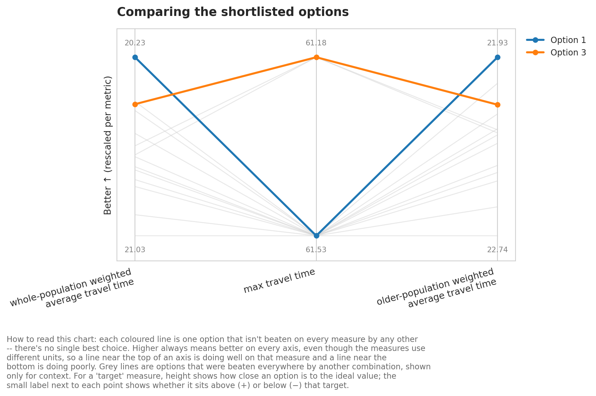
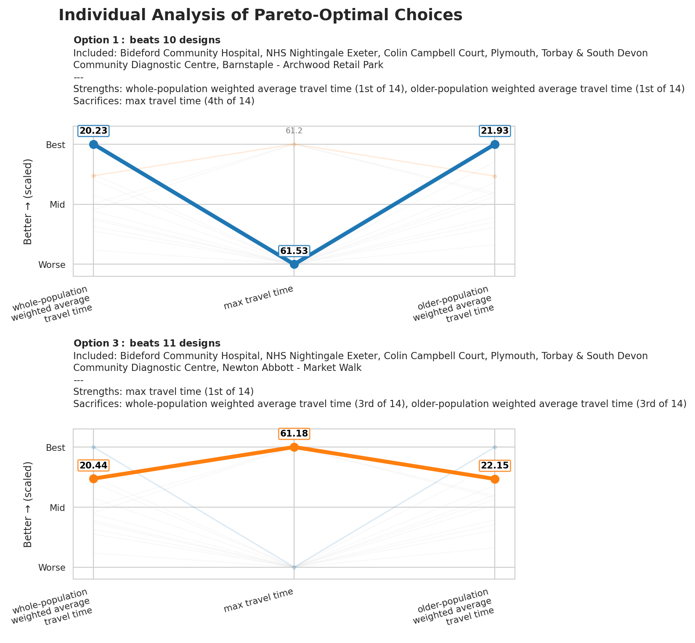

Sometimes the population a service needs to reach isn’t a single number – a facility plan might need to work well both for the whole population and for a specific group with different needs, e.g. an older population who may travel less easily or use a service more often.
The ‘multiple travel matrices’ example showed how to register a secondary travel matrix (public transport, alongside a primary car matrix) so that both modes’ metrics show up side by side on the same ranked list. This example does the equivalent for demand: registering a secondary demand dataset alongside the primary one via add_secondary_demand().
As with secondary travel matrices, a secondary demand scenario never drives site selection – the primary demand always does. Instead, every solution solve() returns also carries weighted_average__<label> and proportion_within_coverage_threshold__<label> columns for each registered scenario, ready to trade off with a Pareto front or blend into the objective with weights=.
Setting up the problem
We’ll reuse the same Devon community diagnostic centre (CDC) sites, travel matrix and region geometry as the weights example, plus the same demand dataset (demand_MF_50_84.csv) – which conveniently already carries two real population figures per LSOA: Total population, and MF50-84, the population aged 50-84. We’ll register Total as the primary demand and MF50-84 as a secondary scenario, to see how a plan optimised for the whole population compares against one that prioritises this older age band.
We also add an illustrative capacity column to the sites (existing sites assumed to have more capacity than new ones) – the CDC sample data has no real capacity figures, so this is made up purely to demonstrate two_step_floating_catchment()’s demand= argument later on.
import pandas as pdfrom lokigi.site import SiteProblemsites_df = pd.read_csv("../../../sample_data/devon_cdcs.csv")# Illustrative capacity -- made up for demonstration, since the sample# dataset has no real capacity data.sites_df["capacity"] = sites_df["Existing"].map({"Yes": 8, "No": 4})problem = SiteProblem()problem.add_sites( sites_df, candidate_id_col="Facility_Name", vertical_geometry_col="Latitude", horizontal_geometry_col="Longitude", required_sites_col="Existing", capacity_col="capacity", )problem.add_region_geometry_layer("../../../sample_data/LSOA_Devon_2021_EW_BSC_V4.gpkg", common_col="LSOA21NM" )problem.add_travel_matrix( travel_matrix_df="../../../sample_data/travel_matrix_car_devon_cdcs.csv", source_col="from_id", unit="minutes", )problem.add_demand("../../../sample_data/demand_MF_50_84.csv", demand_col="Total", location_id_col="LSOA 2021 Name" )
Guessed CRS: EPSG:4326 (Values fall within longitude/latitude bounds)
Now we register the older-population figure as a secondary demand scenario via add_secondary_demand(). It takes the same demand_col/location_id_col arguments as add_demand(), plus a required label used to suffix every metric column it contributes (e.g. label="older_population" -> weighted_average__older_population).
You can register as many secondary demand scenarios as you like this way – each one just needs its own unique label, and that label can’t already be in use by a secondary travel matrix (they share the same suffix namespace).
Let’s look at the column names now available. Alongside the usual Total-demand-weighted metrics (weighted_average, proportion_within_coverage_threshold, …), we now also get an older_population-suffixed sibling for each of the two metrics that actually vary with demand.
We can first do a simple plot of the weighted_average travel time for our primary demand matrix against weighted_average__older_population (our secondary demand matrix).
Because both demand scenarios’ metrics live on the same ranked list, we can trade them off directly with the same Pareto tooling used elsewhere (see the Pareto fronts example) – there’s nothing secondary-demand-specific about compute_pareto_front(), it just consumes whichever solution_df columns you point it at.
from lokigi.multiobjective import Metricmetrics = [ Metric(column="weighted_average", direction="lower_better", label="whole-population weighted average travel time", unit="minutes"), Metric(column="max", direction="lower_better", label="max travel time", unit="minutes"), Metric(column="weighted_average__older_population", direction="lower_better", label="older-population weighted average travel time", unit="minutes"), ]solution.compute_pareto_front(metrics=metrics)solution.pareto_summary()
solution_rank
weighted_average
max
weighted_average__older_population
0
1
20.230707
61.533333
21.933916
1
3
20.441737
61.183334
22.147958
solution.plot_pareto_summary(width_multiplier=3);

solution.plot_pareto_facets();

Blending scenarios with weights=
Instead of keeping the two scenarios as separate Pareto objectives, we can blend them into a single composite objective by passing a secondary demand scenario’s label as a weights= key – exactly like demand, equity, or an additional dataset’s label. Each demand vector is min-max normalised before blending, so this weights how much influence each scenario’s spatial pattern has, not their raw population totals.
two_step_floating_catchment(), site_allocation_summary(), and the demand-facing plots all gain a demand=<label> argument, mirroring the existing matrix=<label> argument used to switch between travel matrices – pass a registered secondary demand scenario’s label to score or plot under that scenario instead of the primary.
site_allocation_summary() takes the same demand= argument, reporting each selected site’s share of demand (and average travel cost) under the chosen scenario instead of the primary.
If a problem also has one or more secondary travel matrices registered (see the multiple travel matrices example), a secondary demand scenario by default only re-weights the primary travel matrix – keeping the added output additive rather than multiplying every demand scenario against every travel matrix. To opt a scenario into also weighting a specific secondary travel matrix, pass its label via also_weight_matrices:
This produces weighted_average__public_transport__older_population and proportion_within_coverage_threshold__public_transport__older_population columns – just for that named combination, not every combination.
Which approach should I use?
Secondary demand scenarios (this example): one solve(), one ranked list, with every registered scenario’s metrics available side by side. Best when you want to explore trade-offs between demand definitions for the same candidate solutions – e.g. with a Pareto front, or by weighting them into a single composite objective.
problem.copy() + SolutionComparator (see the comparing solutions example): two independent solves, each optimised (and pruned) entirely on its own demand definition. Best when the two scenarios genuinely need separate optimisations, and you want find_balanced_solution()’s rank-overlap heuristic to reconcile them afterwards.